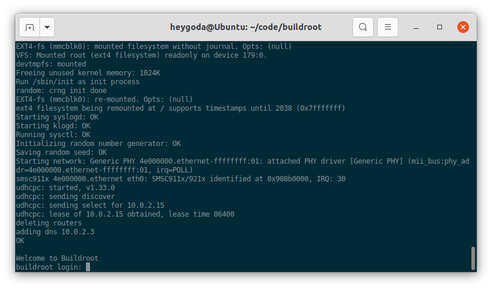
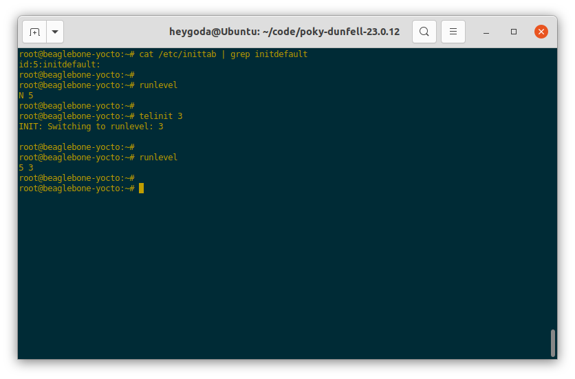
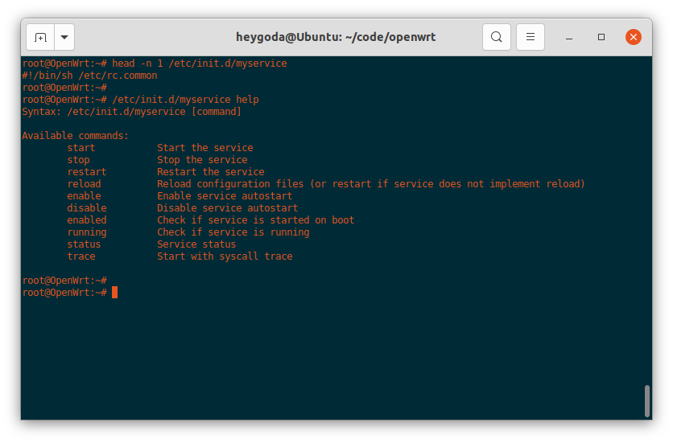
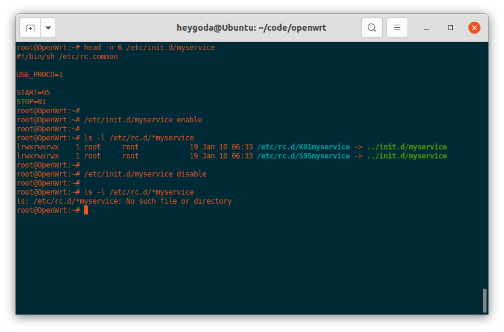
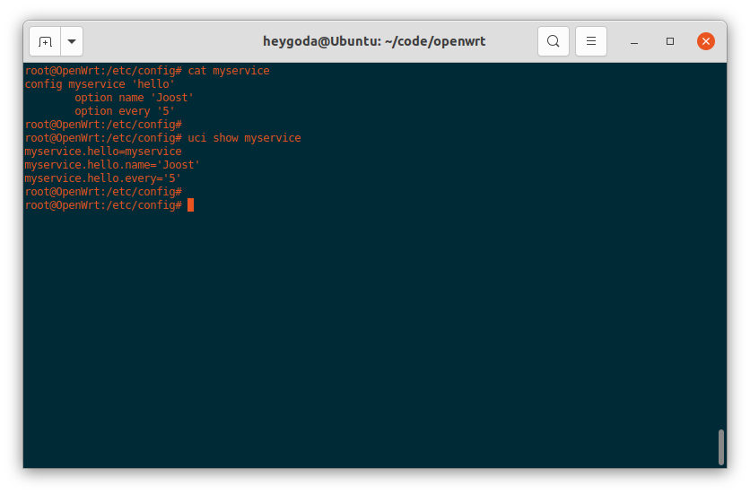

系统初始化
Linux 系统无法自我启动，需要依靠其他的程序来引导启动，在桌面和服务器发行版中，引导启动流程如图所示：The 20,000-foot view of the Linux boot process

在嵌入式 Linux 系统中，流程如图所示：Overview of boot process
可见，无论在何种平台上，引导启动流程最终都会运行一个名为 init 的进程，在系统中的文件为 /sbin/init，该进程的实体及其相关的规则也称为初始化系统：init system；该进程是 Linux 系统启动的第一个进程，其进程 ID 为 1，负责创建系统所需的所有其它进程和守护进程，是系统中所有其它进程的「祖先」，在系统关机时该进程还负责回收所有的系统资源。
init 初始化系统简介
Linux init 初始化系统有不同的版本，如：sysvinit、systemd、openRC、runit等，点击 这里 了解其差异性；
- sysvinit 是 System V 风格的初始化程序集合，是一个经典的初始化系统；
- systemd 是sysvinit的 替代版本，并且支持 System V 和 LSB init 脚本，常见于桌面和服务器 Linux 发行版，如 Ubuntu：

- openRC 是 Gentoo 发行版的原生初始化系统，是一个基于依赖的初始化系统，用于类 Unix 系统；支持在启动时以正确的顺序启动必要的系统服务，在系统使用时管理它们，在关闭时停止它们；
- runit 是一个跨平台的 Unix 初始化系统，可用于替换 sysvinit，具有服务监控、可靠的日志记录工具等特点；
嵌入式 Linux 中常用的初始化系统有BusyBox init、sysvinit 和 OpenWrt procd 等，systemd 因占用资源较多，不常用于嵌入式设备；
BusyBox init
BusyBox 是一个组合了许多常见 Unix 实用程序精简版的软件，其中包括一个 init 程序，如图：

该 init 程序有一个默认的配置文件 /etc/inittab，该文件包含了一系列规则，以便在系统启动或关机时执行相应的程序；BusyBox 源码中有该文件的示例和解释 inittab « examples - busybox：
-
规则格式：
<id>::<action>:<program>每条规则包含 3 个字段id、action 和 program，每两个字段间用
:隔开（注意 id 和 action 之间有一个被忽略的空字段），每条规则单独占用一行； -
各字段含义如下：
| 字段 | 含义 |
|---|---|
| id | 指定执行程序的终端，该字段内容会被附加到 /dev/ 再使用，例如该字段为 ttyS0，则最终为 /dev/ttyS0；如果为空，则使用 init 缺省的 stdin/out； |
| action | 指定执行程序的条件，有效的条件为：sysinit, wait, once, respawn, askfirst, shutdown, restart, ctrlaltdel，具体含义见下表； |
| program | 程序及其参数 |
- action 字段条件含义如下：
| action | 含义 |
|---|---|
| sysinit | 该条件优先级高于其他所有条件，系统启动后首先执行的程序应该使用此条件，该条件下 init 等待程序执行完成后再执行下一条； |
| wait | 在 sysinit 后执行，该条件下 init 等待程序执行完成后再执行下一条； |
| once | 在 wait 后执行，该条件下 init 不等待程序执行完就开始执行下一条； |
| respawn | 接着 once 后执行，该条件下执行程序并在程序退出时重新执行它，常用于执行守护进程； |
| askfirst | 接着 once 后执行，功能与 respawn 类似，但在运行程序前 init 会提示 “Please press Enter to activate this console”，等待用户按下「回车键」之后，才开始执行程序，常用于在终端启动一个不需要登录用户名和密码的交互式 shell； |
| shutdown | 系统「暂停/重启/关机」（ halt/reboot/poweroff ）或 init 接收到 SIGQUIT 信号时执行， |
| restart | init 接收到 SIGQUIT 信号（键盘上同时按下 Ctrl-\\ ）时执行，表示需要重新加载 /etc/inittab 配置文件，如果没有定义 restart 条件，则 SIGQUIT 信号不起作用； |
| ctrlaltdel | init 接收到 SIGINT 信号（键盘上同时按下 Ctrl-Alt-Del ）时执行，执行完后，askfirst / respawn 的执行流程会被挂起； |
-
如果没有定义
/etc/inittab配置文件，BusyBox init 会使用以下默认规则：::sysinit:/etc/init.d/rcS ::askfirst:/bin/sh ::ctrlaltdel:/sbin/reboot ::shutdown:/sbin/swapoff -a ::shutdown:/bin/umount -a -r ::restart:/sbin/init tty2::askfirst:/bin/sh tty3::askfirst:/bin/sh tty4::askfirst:/bin/sh- 系统启动时，首先执行程序
/etc/init.d/rcS； - 然后在
init缺省的stdin/out和/dev/tty2, /dev/tty3, /dev/tty4中启动 shell:/bin/sh； - 系统关机时，执行
/sbin/swapoff -a和/bin/umount -a -r，即关闭系统交换分区和卸载所有文件系统； - 当键盘上同时按下
Ctrl-Alt-Del时，执行/sbin/reboot，即重启系统； - 当
init接收到SIGQUIT信号时，执行/sbin/init，即重新加载/etc/inittab；
- 系统启动时，首先执行程序
-
下面是一个来自 Buildroot 的通用配置文件：
# /etc/inittab # Startup the system ::sysinit:/bin/mount -t proc proc /proc ::sysinit:/bin/mount -o remount,rw / ::sysinit:/bin/mkdir -p /dev/pts /dev/shm ::sysinit:/bin/mount -a ::sysinit:/sbin/swapon -a null::sysinit:/bin/ln -sf /proc/self/fd /dev/fd null::sysinit:/bin/ln -sf /proc/self/fd/0 /dev/stdin null::sysinit:/bin/ln -sf /proc/self/fd/1 /dev/stdout null::sysinit:/bin/ln -sf /proc/self/fd/2 /dev/stderr ::sysinit:/bin/hostname -F /etc/hostname # now run any rc scripts ::sysinit:/etc/init.d/rcS # Put a getty on the serial port ttyAMA0::respawn:/sbin/getty -L ttyAMA0 0 vt100 # GENERIC_SERIAL # Stuff to do for the 3-finger salute #::ctrlaltdel:/sbin/reboot # Stuff to do before rebooting ::shutdown:/etc/init.d/rcK ::shutdown:/sbin/swapoff -a ::shutdown:/bin/umount -a -r-
系统启动时，首先挂载
/proc文件系统（/proc - Linux Filesystem Hierarchy），并重新挂载/根文件系统（The Root Directory-Linux Filesystem Hierarchy）； -
接着创建
/dev/pts虚拟终端（pts(4) - Linux manual page)）和/dev/shm共享内存（Linux - Shared Memory (SHM) (/dev/shm)）目录； -
接着执行
/bin/mount -a，将根据配置文件（Linux - FSTAB (file systems table)）/etc/fstab以规定的格式挂载所需的文件系统；/etc/fstab文件内容如下：# <file system> <mount pt> <type> <options> <dump> <pass> /dev/root / ext2 rw,noauto 0 1 proc /proc proc defaults 0 0 devpts /dev/pts devpts defaults,gid=5,mode=620,ptmxmode=0666 0 0 tmpfs /dev/shm tmpfs mode=0777 0 0 tmpfs /tmp tmpfs mode=1777 0 0 tmpfs /run tmpfs mode=0755,nosuid,nodev 0 0 sysfs /sys sysfs defaults 0 0挂载后文件系统如图：

-
接着执行
/sbin/swapon -a打开系统交换空间（swapon(8) - Linux manual page）； -
接着通过命令
/bin/ln -sf将 self 代表进程的文件描述符 0, 1, 2 和目录分别链接到/dev目录下的「标准输入、标准输出、标准错误」（/dev/stdin, /dev/stdout, /dev/stderr）和/dev/fd，可以参考：proc(5) - Linux manual page - 关于/proc/[pid]/fd/的解释了解更多；相关文件如图：

-
接着执行
/bin/hostname -F /etc/hostname设置静态「系统主机名」（hostname(1) - Linux manual page）；如图：

-
然后执行脚本
/etc/init.d/rcS，该脚本用于执行一些自定义的初始化操作，内容如下：#!/bin/sh # Start all init scripts in /etc/init.d # executing them in numerical order. # for i in /etc/init.d/S??* ;do # Ignore dangling symlinks (if any). [ ! -f "$i" ] && continue case "$i" in *.sh) # Source shell script for speed. ( trap - INT QUIT TSTP set start . $i ) ;; *) # No sh extension, so fork subprocess. $i start ;; esac done该脚本将按数字顺序执行
/etc/init.d/目录下以字符 ‘S’ 为名称开头的脚本，如果脚本以字符串 “.sh” 为名称结尾，则在当前进程中执行；否则，脚本将在单独的进程中执行；按照 Linux 标准库的要求，这些脚本应该能接收start作为参数，参考: Init Script Actions (linuxfoundation.org)了解更多；如图（4 个脚本将按从上到下的顺序依次执行）：

-
最后执行
/sbin/getty -L ttyAMA0 0 vt100打开串口/dev/ttyAMA0，并登录系统（agetty(8) - Linux manual page）；完整系统初始化流程如图：
登录系统后，就可以在终端对系统进行更多的操作；
-
系统关机时，首先执行脚本
/etc/init.d/rcK，该脚本中将执行一些自定义的去初始化操作，内容如下：#!/bin/sh # Stop all init scripts in /etc/init.d # executing them in reversed numerical order. # for i in $(ls -r /etc/init.d/S??*) ;do # Ignore dangling symlinks (if any). [ ! -f "$i" ] && continue case "$i" in *.sh) # Source shell script for speed. ( trap - INT QUIT TSTP set stop . $i ) ;; *) # No sh extension, so fork subprocess. $i stop ;; esac done该脚本将按数字顺序执行
/etc/init.d/目录下以字母 ‘K’ 为名称开头的脚本，如果脚本以字符串 “.sh” 为名称结尾，则在当前进程中执行；否则，脚本将在单独的进程中执行；按照 Linux 标准库的要求，这些脚本应该能接收stop作为参数，参考: Init Script Actions (linuxfoundation.org)了解更多； -
接着执行
/sbin/swapoff -a关闭系统交换空间； -
最后执行
/bin/umount -a -r卸载所有文件系统；
-
参考链接：BusyBox init | Mastering Embedded Linux Programming - Third Edition
sysvinit
sysvinit (System V init) 的设计灵感来自于Unix System V，最早可以追溯到 1980 年代中期，最初由 Miquel van Smoorenburg 编写，用于控制系统的启动和关闭；
BusyBox init 守护程序只是 sysvinit 的精简版本。与 BusyBox init 相比，sysvinit 主要有2个优点：支持运行级别，允许从一个运行级别切换到另一个时，一次性启动或停止一组程序；以模块化的方式组织启动脚本，方便在编译或运行阶段添加脚本；
-
规则格式
sysvinit 配置文件
/etc/inittab首先应通过initdefault指定运行级别，以下语句指定运行级别为 3：id:3:initdefault:系统启动后，可以通过命令
runlevel查看运行级别，还通过命令telinit [runlevel]或者init [runlevel]切换运行级别，也可以在启动内核前通过命令行参数来指定其运行级别，如指定运行级别为 1：console=ttyAMA0 root=/dev/mmcblk1p2 1；sysvinit 支持的规则格式比 BusyBox init 多了 runlevels 字段，如下：
id:runlevels:action:process -
各字段含义如下：
| 字段 | 含义 |
|---|---|
| id | 唯一标识符，最多4个字符，此字段含义与 BusyBox init 含义有差异； |
| runlevels | 指定执行程序的运行级别，在 BusyBox init 中此字段为空； |
| action | 指定执行程序的条件，此字段含义与 BusyBox init 含义一致； |
| process | 程序及其参数； |
- runlevels 字段支持的运行级别如下：
| runlevels 运行级别 | 含义 |
|---|---|
| S | 运行启动任务 |
| 0 | 停止系统 |
| 1~5 | 一般用途 |
| 6 | 重启系统 |
运行级别 1~5 可以随意使用，在桌面发行版上，通常按如下方式分配： 1: 单用户 2: 无需网络配置的多用户 3: 需要网络配置的多用户 4: 未使用 5: 图形界面登录的多用户
-
init.d 脚本
每个运行级别都对应一个名为
/etc/init.d/rc<runlevel>.d的目录，如图：
切换运行级别时，运行级别处理脚本
/etc/init.d/rc接收一个参数表示将要切换到的运行级别，首先执行此运行级别对应目录/etc/init.d/rc<runlevel>.d下所有以大写字符 ‘K’ 开头的脚本，并使用stop作为其参数，然后运行相同目录下以字符 ‘S’ 开头的脚本，并使用start作为其参数；同样的，‘K’ 或 ‘S’ 后紧跟的 2 位数字作为脚本的执行顺序，如果数字相同，则按照其后的字符顺序来执行；下图是一个运行级别 5 对应目录的例子：

可以看到，运行级别对应目录
rc<runlevel>.d中的文件实际上是init.d目录中相应脚本的符号链接，该脚本接收 2 个参数start和stop，分别用于启动和停止操作；你也可以按照此规则在init.d目录下添加自定义的脚本，然后符号链接到对应的运行级别目录；以下是来自 Yocto 的 sysvinit 配置文件
/etc/inittab，可以看到 BusyBox init 的配置文件与其有很多相似的地方：# /etc/inittab: init(8) configuration. # $Id: inittab,v 1.91 2002/01/25 13:35:21 miquels Exp $ # The default runlevel. id:5:initdefault: # Boot-time system configuration/initialization script. # This is run first except when booting in emergency (-b) mode. si::sysinit:/etc/init.d/rcS # What to do in single-user mode. ~~:S:wait:/sbin/sulogin # /etc/init.d executes the S and K scripts upon change # of runlevel. # # Runlevel 0 is halt. # Runlevel 1 is single-user. # Runlevels 2-5 are multi-user. # Runlevel 6 is reboot. l0:0:wait:/etc/init.d/rc 0 l1:1:wait:/etc/init.d/rc 1 l2:2:wait:/etc/init.d/rc 2 l3:3:wait:/etc/init.d/rc 3 l4:4:wait:/etc/init.d/rc 4 l5:5:wait:/etc/init.d/rc 5 l6:6:wait:/etc/init.d/rc 6 # Normally not reached, but fallthrough in case of emergency. z6:6:respawn:/sbin/sulogin AMA0:12345:respawn:/bin/start_getty 115200 ttyAMA0 vt102 # /sbin/getty invocations for the runlevels. # # The "id" field MUST be the same as the last # characters of the device (after "tty"). # # Format: # <id>:<runlevels>:<action>:<process> # 1:12345:respawn:/sbin/getty 38400 tty1- 运行级别是一种在系统模式之间切换的简单方便的方法，例如：从生产模式到维护模式；
- System V init 是 Buildroot 和 Yocto 项目中的一个选项。 在这两种情况下，init 脚本都被剥离了任何 bash shell 细节，因此它们能与 BusyBox ash shell 一起使用。 不过 Buildroot 并没有实现真正的 System V，而只是用 System V init 替换 BusyBox init 程序，并使用了一个模仿 BusyBox 行为的 inittab；同时Buildroot 不实现运行级别，只是切换到级别 0 或 6 会停止或重新启动系统；
- 参考链接：System V init | Mastering Embedded Linux Programming - Third Edition
OpenWrt procd
OpenWrt 的用户空间初始化包含一系列固定的步骤，供用户在启动时加入自己的内核模块、热插拔事件和初始化流程等；不同于 sysvinit 的初始化脚本，OpenWrt 使用一个名为 procd 的进程管理守护进程（process management daemon）来执行初始化脚本和守护进程管理，该进程同时替代了这些模块的功能：hotplug2, busybox-klogd, busybox-syslogd, busybox-watchdog；OpenWrt 初始化流程如图：
启动日志如下：
启动后 procd 进程如下：

参考链接：Init (User space boot) reference for Chaos Calmer: procd
- 与 BusyBox init 一样，procd 也使用
/etc/inittab作为初始化配置文件，其格式与 BusyBox init 基本一致，启动时支持的 action 如下表：
| action | 含义 |
|---|---|
| respawn | 执行程序并在程序退出时重新执行它； |
| respawnlate | 作用同 respawn，但是需等 procd init 完成后才开始执行程序； |
| askfirst | 作用与 respawn 类似，但在执行程序前会提示 “Please press Enter to activate this console”，等待用户按下「回车键」之后，才开始执行程序； |
| askconsole | 作用与 askfirst 类似，但其作用的终端是传递给内核的命令行参数 “console=”，而不是像 askfirst 一样接收一个参数作终端； |
| askconsolelate | 作用同 askconsole，但是需等 procd init 完成后才开始执行程序； |
| sysinit | 触发 procd 执行相应的命令，该命令由传递的参数给出，仅执行一次；这通常用于触发 /etc/rc.d/ 目录下脚本的执行； |
-
下面是一个
/etc/inittab的例子：::sysinit:/etc/init.d/rcS S boot ::shutdown:/etc/init.d/rcS K shutdown ttyAMA0::askfirst:/usr/libexec/login.sh- sysinit 所在行用于执行
/etc/rc.d/目录下的启动脚本，这些启动脚本以字符 ‘S’ 开头，需符合 procd init 脚本规范；该行的作用相当于/etc/rc.d/S* boot； - shutdown 所在行用于执行
/etc/rc.d/目录下的关机脚本，这些脚本以字符 ‘K’ 开头，需符合 procd init 脚本规范；该行的作用相当于/etc/rc.d/K* shutdown； - askfirst 所在行用于在
/dev/ttyAMA0执行/usr/libexec/login.sh登录脚本；
注意：“/etc/init.d/rcS” 字段是被忽略的（实际系统中也并不存在此脚本），可以填入任意其他字符，但不能为空；
- sysinit 所在行用于执行
-
proc init 脚本位于
/etc/rc.d/目录下，是 /etc/init.d/ 目录下脚本的软链接文件，如图：
-
一个典型的 proc init 脚本
/etc/init.d/myservice（来自：[OpenWrt Wiki] Create a sample procd init script）：#!/bin/sh /etc/rc.common USE_PROCD=1 START=95 STOP=01 start_service() { # Reading config config_load "myservice" local name local every config_get name hello name config_get every hello every procd_open_instance # pass config to script on start procd_set_param command /bin/sh "/var/myscript.sh" "$name" "$every" procd_set_param file /etc/config/myservice procd_set_param stdout 1 procd_set_param stderr 1 procd_close_instance }-
第一行是 shebang 行，表示使用文件
/etc/rc.common作为包装器来提供主要和默认功能，并在执行之前检查该脚本；有了这一行后，该脚本将默认支持一些命令，如下所示： -
USE_PROCD=1表示该脚本使用 procd 来管理，如果不定义此行，则该脚本不支持 procd，其用法请参考： [OpenWrt Wiki] Init Scripts； -
START=95和STOP=01表示该脚本在系统启动和关机时的顺序，以 2 位数字表示，对该脚本执行enable或disable命令时，将使用这 2 位数字在/etc/rc.d/目录下新增或删除该脚本的软链接，如下图： -
函数
start_service()通过读取配置文件/etc/config/myservice的配置项来启动脚本/var/myscript.sh，其中，以 config_ 开头的函数来自文件/lib/functions.sh，以 procd_ 开头的函数来自文件/lib/functions/procd.sh(函数使用参考: [OpenWrt Wiki] procd init script parameters)，都是通过/etc/rc.common引入的；/var/myscript.sh文件内容：#!/bin/sh # these if statements will check input and place default values if no input is given # they will also check if input is a number so you can call # this script with just a time and it will still work correctly if [ "$1" = '' ]; then name="You" else if echo "$1" | egrep -q '^[0-9]+$'; then name="You" else name="$1" fi fi if [ "$2" = '' ]; then every="5" else every="$2" fi if echo "$1" | egrep -q '^[0-9]+$'; then every="$1" fi #endless loop, will print the message every X seconds as indicated in the $every variable while [ 1 ]; do echo "Hey, $name, it's time to get up" sleep $every done exit 0该文件功能为间隔几秒输出一句“Hey, XX, it’s time to get up“；
/etc/config/myservice配置文件内容：config myservice 'hello' option name 'Joost' option every '5'该文件采用 OpenWrt 统一的 UCI（Unified Configuration Interface）配置文件格式，其可以通过命令
uci进行配置，如下图：参考 [OpenWrt Wiki] The UCI system 了解更多信息；
-
systemd
待补充